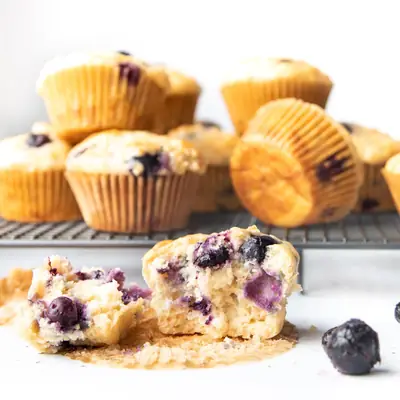

Greek Yogurt Blueberry Muffins

Ingredients
- 1¾ cup (240g) flour (all purpose / plain)
- 1 tsp baking powder
- ½ tsp baking soda
- ¼ tsp cooking salt / kosher salt
- 1 tsp lemon zest
- 1 cup (250g) plain Greek yogurt
- 2 large eggs
- 1 medium banana (, mashed (around ½ cup)
- ¼ cup (60ml) olive oil
- ¼ cup (60ml) maple syrup
- 2 tsp vanilla extract
- 1 ½ cup (200g) blueberries (reserve some for topping)
Steps
- Preheat oven to 180℃/355℉ (160℃ Fan). Line a 12 hole muffin tin with paper cases (muffin liners) and spray with oil / cooking spray to prevent sticking.
- Whisk Dry: Whisk flour, baking powder, baking soda and salt together in a medium bowl.
- Wet: In a seperate large bowl, whisk together the yogurt, oil, mashed banana, eggs, maple syrup, vanilla and lemon zest.
- Add the dry ingredients to the wet and mix until just combined - do not over mix. Some flour lumps in the batter are fine. If using frozen blueberries, reserve 1 tbsp of the dry mixture before combining.
- Add a samll amount of batter to the base of each muffin case, just enough to cover the bottom.
- Add blueberries: If using frozen, toss the blueberries in the reserved flour mixture then gently fold into the remaining batter. If using fresh, fold berries directly into the batter. Divide batter between the muffin liners and top with the extra blueberries.
- Bake for 18-20 minutes, or until a skewer / toothpick inserted into the centre comes out clean or with just a few crumbs attached.
- Remove from the tin immediately and transfer to a wire rack to cool.
Recipe by Healthy Little Foodies, from Healthy Little Foodies. Saved here for personal use; the original has the full notes, tips and photos. Open original